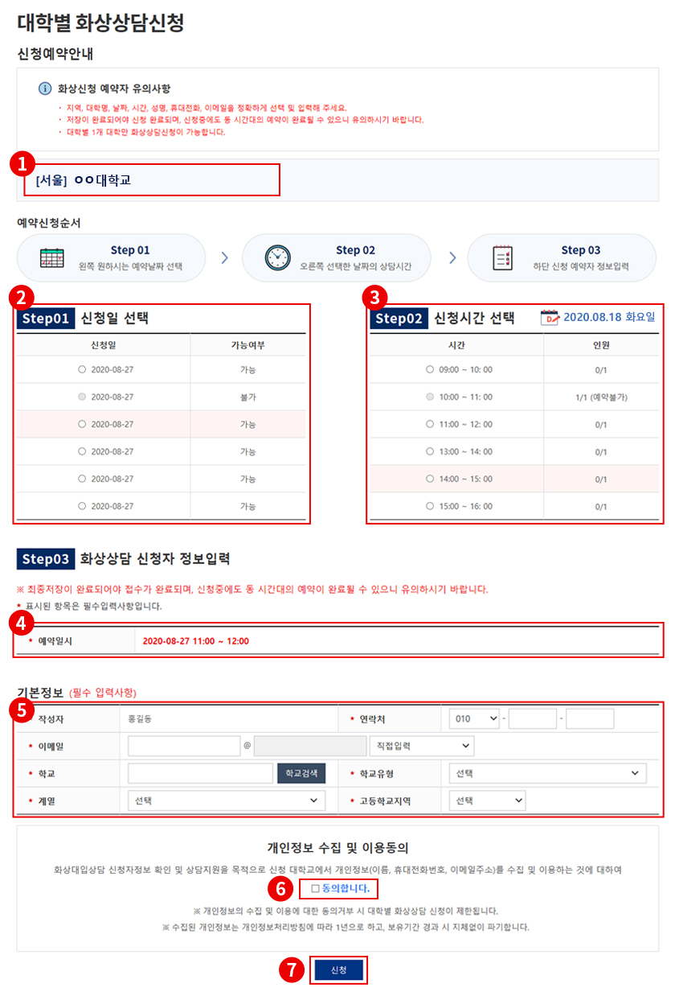

건너뛰기링크
주메뉴바로가기
본문바로가기
대학별 온라인상담 메인
대학정보
대학별 입학상담
대학별 화상상담
사용 방법안내
1.
최초 대학별 온라인상담 홈페이지 접속하시면 회원가입한 고등학교 지역에 해당되는 대학리스트(③번 영역)가
나타납니다.
※ 학부모는 참가대학 전체 대학리스트가 ③번 영역에서 나타납니다.
2.
지도
에서 원하는 여러 지역을 클릭 하시면 ③번 영역에서 해당 지역 대학리스트가 나타납니다.
2-1.
관심대학 불러오기
버튼을 클릭하면 포털(어디가) 홈페이지에서 관심대학 설정한 대학이 ③번 영역에서
해당 지역 대학리스트가 나타납니다.
2-2.
전체화상상담 가능대학
버튼을 클릭하면 ③번 영역에서 해당 지역 대학리스트가 나타납니다.
2-3.
대학명을 입력 후 검색버튼을 클릭하면 ③번 영역에서 해당 지역 대학리스트가 나타납니다.
3.
대학 리스트에서 대학을 클릭하면 해당 대학정보 페이지로 이동됩니다.
4.
③번 영역 대학리스트에서
이름순
클릭하면 전체 대학이 오름차순(가,나,다..)으로 정렬해서 나타납니다.
5.
③번 영역 대학리스트에서
지역순
클릭하면 전체 대학이 오름차순(가,나,다..)으로 정렬해서 나타납니다.
6.
참가대학 다운로드
버튼을 클릭하면 PDF 파일로 참가대학 리스트를 다운받습니다.
사용 방법안내
1.
선택에 따라 메뉴를 이동합니다.
2.
지역을 선택하고 찾고자 하는 참가대학명을 선택하면 해당 대학정보 페이지로 이동됩니다.
※ 찾고자 하는 대학이 없을 시에는 온라인 대입상담에 참여하지 않는 대학입니다.
3.
홈페이지
버튼 클릭시 해당 대학 홈페이지로 새창이 띄워집니다.
입시홈페이지
버튼 클릭시 해당 대학 입시홈페이지로 새창이 띄어집니다.
4.
해당 대학교에서 SNS (카카오,네이버블로그, 페이스북, 인스타그램) 활용되고 있는 서비스만 이미지가 나타납니다.
5.
해당대학교에서 동영상이 있을 시 클릭 시 보여집니다.
※ 동영상이 없을 시에는 해당 대학교 이미지가 보여집니다.
5-1.
추가 동영상이 있을 시
해당대학교 동영상 더보기
버튼을 클릭하면 새창으로 띄어집니다.
6.
대학별 입학상담
버튼 클릭 시 상담페이지로 이동됩니다.
※ 해당 대학교에서 자체 입학상담을 진행 시에는 새창으로 상담페이지로 띄어집니다.
7.
대학별 화상상담신청
버튼 클릭 시 신청페이지로 이동됩니다.
※ 해당 대학교에서 화상상담 서비스를 제공하지 않은 대학교는 항목이 나타나지 않습니다.
8.
해당 대학교 연락처를 확인하여 전화상담을 합니다.
9.
해당 대학교에 추가 정보가 필요 시 각각의 버튼을 클릭하면 팝업창 또는 새창으로 확인 및 입력을 합니다.
10.
해당 대학교에 모집요강을 다운받을 수 있습니다.
사용 방법안내
1.
지역 선택하고 대학교를 선택합니다.
※ 해당대학교에서 자체 입학상담을 진행 시에는 해당 대학교 상담페이지로 이동됩니다.
2.
질문유형, 제목을 입력합니다.
3.
포털(어디가) 홈페이지에서 회원가입한 정보를 불러오고, 선택입력항목을 입력하지 않은 사용자는
학교, 학교유형, 계열 정보를 입력합니다.
4.
수정
버튼을 클릭하면 사용자 기본정보를 저장합니다.
5.
지역, 대학, 모집시기, 지망학과 순으로 선택합니다.
사용 방법안내
1.
학생부 성적을 학년별 탭으로 볼 수 있습니다.
2.
수정
버튼을 클릭하면 선택한 교과과목을 수정 할 수 있습니다.
3.
삭제
버튼을 클릭하면 선택한 교과과목이 삭제됩니다.
4.
추가하기
버튼을 클릭하면 교과과목을 추가적으로 입력할 수 있습니다.
5.
교과과목을 선택하고 학기별 단위수와 석차등급을 입력합니다.
6.
수정
버튼을 클릭하면 학생부 성적을 저장합니다.
7.
접기
버튼을 누르면 해당 내용이 사라집니다.
8.
리스트박스에서 수능/모의고사를 선택하면 학습진단의 성적관리에서 입력했을 경우에는
해당 성적을 불러 옵니다.
9.
탐구영역에서 입력하고 싶은 탐구영역을 선택합니다.
10.
사용자가 응시한 상세 과목명을 선택합니다.
11.
사용자가 성적을 수능/모의고사의 표준점수, 백분위, 등급 값을 입력하거나 미리 입력한 성적을 불러와
수정합니다.
12.
수정
버튼을 클릭하면 새로 입력한 성적이나 수정한 성적을 저장합니다.
13.
대학별 입학상담 질문내용을 입력합니다.
14.
저장
버튼을 클릭하면 입력한 대학별 입학상담글을 저장합니다.
※ 답변은 마이페이지 > 대학별 입학상담내역에서 확인할 수 있습니다.
15.
취소
버튼을 클릭하면 온라인대입상담글 등록을 취소하고 메인 페이지로 이동합니다.

사용 방법안내
1.
온라인대입상담 > 대학정보
메뉴에서
화상상담신청
버튼을 클릭한 대학교만 제공되는 서비스입니다.
지역 및 대학교명이 나타납니다.
※ 대학교별 1번만 신청 가능합니다.
2.
신청일을 확인하여 원하시는 신청이 가능한 신청일을 선택합니다.
※ 가능여부에서
불가
는 신청할 수 없습니다.
3.
신청시간을 확인하여 원하시는 신청이 가능한 신청시간을 선택합니다.
※ 가능여부에서
불가
는 신청할 수 없습니다.
4.
②번,③번 선택한 예약 일시가 나타납니다.
5.
회원가입한 정보가 불러오며 확인하고 수정합니다.
6.
개인정보수집 및 이용동의
를 체크합니다. 미 체크 시 신청이 되지 않습니다.
7.
신청
버튼을 클릭하면 완료 시 SMS 발송 및 신청완료가 됩니다. 완료 후 추가정보를 입력합니다.
※ 신청 중에 인원수가 찼을 경우에는 신청이 되지 않습니다.전체 화상상담신청 가능대학 중 대학교별 1번만
화상상담 신청 가능합니다.
사용 방법안내
1.
지역, 예약대학, 모집시기는 수정할 수 없으며
마이페이지> 대학별 화상신청내역
에서
신청취소
를 할 수 있습니다.
지망학과 및 전형명을 선택합니다.
2.
접기
버튼을 누르면 해당 내용이 사라집니다.
3.
학생부 성적을 학년별 탭으로 볼 수 있습니다.
4.
수정
버튼을 클릭하면 선택한 교과과목을 수정 할 수 있습니다.
5.
삭제
버튼을 클릭하면 선택한 교과과목이 삭제됩니다.
6.
추가하기
버튼을 클릭하면 교과과목을 추가적으로 입력할 수 있습니다.
7.
교과과목을 선택하고 학기별 단위수와 석차등급을 입력합니다.
8.
수정
버튼을 클릭하면 학생부 성적을 저장합니다.
9.
접기
버튼을 누르면 해당 내용이 사라집니다.
10.
리스트박스에서 수능/모의고사를 선택하면 학습진단의 성적관리에서 입력했을 경우에는
해당 성적을 불러 옵니다.
11.
탐구영역에서 입력하고 싶은 탐구영역을 선택합니다.
12.
사용자가 응시한 상세 과목명을 선택합니다.
13.
사용자가 성적을 수능/모의고사의 표준점수, 백분위, 등급 값을 입력하거나 미리 입력한 성적을 불러와
수정합니다.
14.
수정
버튼을 클릭하면 새로 입력한 성적이나 수정한 성적을 저장합니다.
사용 방법안내
1.
화상상담신청 질문내용을 입력합니다.
2.
저장
버튼을 클릭하면 입력한 대학별 입학상담글을 저장합니다.
※ 답변은
마이페이지 > 대학별 입학상담내역
에서 확인할 수 있습니다.
3.
취소
버튼을 클릭하면 대학별 화상상담신청 등록을 취소하고 메인 페이지로 이동합니다.